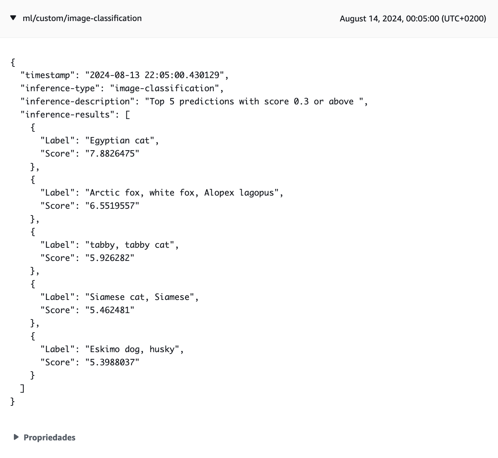
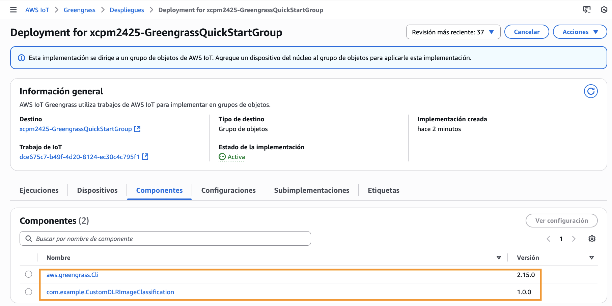

Actividade 2
COMPOÑENTES PERSONALIZADOS DE APRENDIZAXE MÁQUINA
Obxectivo
O obxectivo desta actividade é crear un compoñente personalizado para a execución de modelos de aprendizaxe máquina (ML). A partires do compoñente de inferencia da actividade anterior (aws.greengrass.DLRImageClassification) vamos crear unha versión modificada que se subscriba a un tópico IPC predefinido no que agarde recibir mensaxes JSON co seguinte esquema:
{
"image": "<ficheiro_jpeg>"
}
Nota
Podes ver aquí a documentación sobre a implementación de compoñentes ML personalizados.
Creación do compoñente de inferencia ML personalizado
Para crear o compoñente fai o seguinte no ambiente Cloud9:
-
Descarga a receita do compoñente no directorio de receitas.
$ cd ~/environment/GreengrassCore/recipes $ DLR_INFERENCE_ARN=$(aws greengrassv2 list-components \ --scope PUBLIC \ --query 'components[?componentName==`aws.greengrass.DLRImageClassification`]' | jq -r '.[0].arn') $ DLR_INFERENCE_VERSION_ARN=$(aws greengrassv2 list-component-versions \ --arn $DLR_INFERENCE_ARN \ --query 'componentVersions[0].arn' \ --output text) $ aws greengrassv2 get-component \ --arn $DLR_INFERENCE_VERSION_ARN \ --recipe-output-format JSON \ --query recipe \ --output text | base64 --decode | jq '.' > aws.greengrass.DLRImageClassification-1.0.0.json -
Descarga a receita modificada que vamos usar para o compoñente personalizado. Edita a receita e insire o teu nome no campo
ComponentPublisher.$ wget -O com.example.CustomDLRImageClassification-1.0.0.json https://miot-cniot.github.io/practica_4/stuff/CustomDLRImageClassification-1.0.0.json -
Compara as receitas e comproba os cambios que se fixeron para adaptala ao noso exemplo. Os principais foron:
- Reduciuse o número de plataformas soportadas polo compoñente á única que nos interesa para o exemplo.
- Engadironse á configuración unha política de control de acceso para os tópicos IPC e un parámetro
LocalTopicpara configurar o tópico IPC a usar.
-
Comproba os artefactos do compoñente orixinal.
$ sudo ls -l /greengrass/v2/packages/artifacts-unarchived/aws.greengrass.DLRImageClassification/2.1.14/image_classification/
 Imaxe: artefactos do compoñente DLRImageClassification.
Imaxe: artefactos do compoñente DLRImageClassification.
-
Crea o directorio para os artefactos do compoñente personalizado.
$ mkdir -p ~/environment/GreengrassCore/artifacts/com.example.CustomDLRImageClassification/1.0.0 && cd ~/environment/GreengrassCore/artifacts/com.example.CustomDLRImageClassification/1.0.0 -
Copia os ficheiros Python ao directorio de artefactos do compoñente personalizado e configura os permisos.
$ sudo cp /greengrass/v2/packages/artifacts-unarchived/aws.greengrass.DLRImageClassification/2.1.14/image_classification/*.py . $ sudo chown ubuntu:ubuntu *.py $ chmod 664 *.py -
Descarga o ficheiro
inference.pymodificado para o compoñente personalizado.$ mv inference.py inference.1.py $ wget https://miot-cniot.github.io/practica_4/stuff/inference.py -
Abre ambos ficheiros
inferencee comproba os cambios que se fixeron para adaptalo ao noso exemplo. Os principais foron:- Engadiuse o código que realiza a subscrición ao tópico IPC.
- Definiuse un manexador (InferenceRequestHandler) para procesar os eventos da subscrición IPC. A parte máis relevante do manexador é o método
on_stream_eventque é o que procesa as mensaxes que se reciben no tópico e fai unha inferencia se procede.
Nota
Presta atención a que o código engadido en
inference.pyé semellante ao do Subscriber que se viu na sección 5 do curso. -
Unha vez remates de comprobar as diferenzas, elimina a copia
inference.1.py. -
Crea un directorio para as imaxes e descarga a imaxe de proba.
$ mkdir ~/environment/image_classification && cd ~/environment/image_classification $ wget https://raw.githubusercontent.com/awslabs/aws-greengrass-labs-ml-components/main/dlr/aws.greengrass.DLRImageClassification/image_classification/sample_images/cat.jpeg
Despregadura do compoñente
-
Na consola IoT fai unha nova despregadura no dispositivo Greengrass edgeDevice que NON inclúa o compoñente aws.greengrass.DLRImageClassification.
-
Asegúrate de que non quede ningunha dependencia do compoñente no dispositivo.
$ sudo /greengrass/v2/bin/greengrass-cli component list | grep -E 'Component Name:.*DLR' -A 3 -
No cliente MQTT da consola de AWS IoT subscríbete ao tópico
ml/custom/image-classification, no que o compoñente personalizado publicará os resultados das inferencias. -
Desprega o compoñente personalizado.
$ sudo /greengrass/v2/bin/greengrass-cli deployment create \ --recipeDir ~/environment/GreengrassCore/recipes \ --artifactDir ~/environment/GreengrassCore/artifacts \ --merge "com.example.CustomDLRImageClassification=1.0.0" -
Comproba que a despregadura se completou correctamente.
$ sudo /greengrass/v2/bin/greengrass-cli component list | grep -E 'Component Name:.*DLR' -A 3 $ sudo cat /greengrass/v2/logs/com.example.CustomDLRImageClassification.log -
Comproba tamén se se recibiu no cliente MQTT da consola AWS IoT o resultado da inferencia no tópico
ml/custom/image-classification. -
Se os pasos anteriores non dan os resultados agardados, comproba no log do Greengrass se houbo erros durante a despregadura do compoñente. Podes consultar aquí os erros máis comúns.
Verificación do funcionamento
-
Abre un novo terminal no ambiente Cloud9 e subscríbite ao tópico IPC
ml/image.$ sudo /greengrass/v2/bin/greengrass-cli pubsub sub -t="ml/image" Successfully subscribed to topic: ml/image -
Desde outro terminal diferente publica unha mensaxe no tópico
ml/image.$ sudo /greengrass/v2/bin/greengrass-cli pubsub pub -m="{\"image\": \"cat.jpeg\"}" -t="ml/image"
No terminal no que executaches a subscrición aparecerá a mensaxe
{"image": "cat.jpeg"}que ten o formato JSON que o compoñente agarda recibir.
-
Comproba que tamén se recibira no cliente MQTT da consola AWS IoT o resultado da inferencia no tópico
ml/custom/image-classification. -
Descarga outra imaxe no directorio de imaxes de proba.
$ pwd /home/ubuntu/environment/image_classification $ wget -O cat2.jpeg https://www.publicdomainpictures.net/pictures/90000/velka/cat-14022476612Gk.jpg -
Publica a mensaxe co nome do novo ficheiro e comproba que se reciba no cliente MQTT o resultado da inferencia.
$ sudo /greengrass/v2/bin/greengrass-cli pubsub pub -m="{\"image\": \"cat2.jpeg\"}" -t="ml/image"


- Podes facer máis probas se queres descargando outras imaxes e publicando o seu nome.
Publicación e despregadura do compoñente
-
Crea un bucket S3 para subir os artefactos e receita do compoñente.
$ EPOCH_TIME=$(date +"%s") && S3_BUCKET=ggcv2-workshop-$HOSTNAME-$EPOCH_TIME && aws s3 mb s3://$S3_BUCKET --region $AWS_DEFAULT_REGION -
Troca o manifesto da receita polo seguinte. Os cambios que se fixeron foron:
- Engadiuse o obxecto
Artifacts. Lembra engadir na URI o nome do teu bucket. - No script cambiouse a localización do ficheiro
inference.pyde{artifacts:path}a{artifacts:decompressedPath}/custom.{ "Platform": { "os": "linux", "architecture": "amd64" }, "Lifecycle": { "setEnv": { "DLR_IC_MODEL_DIR": "{variant.DLR.ImageClassification.ModelStore:artifacts:decompressedPath}/{configuration:/ModelResourceKey/x86_64}", "DEFAULT_DLR_IC_IMAGE_DIR": "/home/ubuntu/environment/image_classification/", "TOPIC": "{configuration:/LocalTopic}" }, "run": { "RequiresPrivilege": "true", "script": "\n export PATH=\"{variant.DLR:configuration:/MLRootPath}/greengrass_ml_dlr_conda/bin:$PATH\"\n eval \"$({variant.DLR:configuration:/MLRootPath}/greengrass_ml_dlr_conda/bin/conda shell.bash hook)\"\n conda activate greengrass_ml_dlr_conda\n python3 {artifacts:decompressedPath}/custom/inference.py" } }, "Artifacts": [ { "URI": "s3://[YOUR BUCKET NAME]/artifacts/com.example.CustomDLRImageClassification/1.0.0/custom.zip", "Unarchive": "ZIP" } ] }
- Engadiuse o obxecto
-
Comprime os artefactos do compoñente e sube o ficheiro comprimido e a receita ao bucket S3.
$ cd ~/environment/GreengrassCore $ ARTIFACTS_DIR="./artifacts/com.example.CustomDLRImageClassification/1.0.0" $ zip -j $ARTIFACTS_DIR/custom.zip $ARTIFACTS_DIR/*.py $ aws s3 cp $ARTIFACTS_DIR/custom.zip s3://$S3_BUCKET/artifacts/com.example.CustomDLRImageClassification/1.0.0/ $ aws s3 cp ./recipes/com.example.CustomDLRImageClassification-1.0.0.json s3://$S3_BUCKET/recipes/ -
Comproba que os contidos do bucket son correctos.
$ aws s3 ls --recursive s3://$S3_BUCKET 2024-08-14 08:31:47 6396 artifacts/com.example.CustomDLRImageClassification/1.0.0/custom.zip 2024-08-14 08:32:02 3071 recipes/com.example.CustomDLRImageClassification-1.0.0.json -
Crea o compoñente no AWS IoT Core.
$ cd ~/environment/GreengrassCore/recipes $ aws greengrassv2 create-component-version --inline-recipe fileb://com.example.CustomDLRImageClassification-1.0.0.json --region $AWS_DEFAULT_REGION { "arn": "arn:aws:greengrass:us-east-1:009649136346:components:com.example.CustomDLRImageClassification:versions:1.0.0", "componentName": "com.example.CustomDLRImageClassification", "componentVersion": "1.0.0", "creationTimestamp": "2024-08-14T08:37:26.175000+00:00", "status": { "componentState": "REQUESTED", "message": "NONE", "errors": {}, "vendorGuidance": "ACTIVE", "vendorGuidanceMessage": "NONE" } } -
Comproba que aparece na listaxe de compoñentes. Compróbao tamén na consola do AWS IoT.
$ aws greengrassv2 list-components --region $AWS_DEFAULT_REGION --query='components[?componentName==`com.example.CustomDLRImageClassification`]' [ { "arn": "arn:aws:greengrass:us-east-1:009649136346:components:com.example.CustomDLRImageClassification", "componentName": "com.example.CustomDLRImageClassification", "latestVersion": { "arn": "arn:aws:greengrass:us-east-1:009649136346:components:com.example.CustomDLRImageClassification:versions:1.0.0", "componentVersion": "1.0.0", "creationTimestamp": "2024-08-14T08:37:26.175000+00:00", "description": "Custom Image classification inference using DLR and resnet50 default model.", "publisher": "Xoan C. Pardo", "platforms": [ { "attributes": { "architecture": "amd64", "os": "linux" } } ] } } ] -
Elimina o compoñente despregado localmente. Asegúrate de que non quede ningunha dependencia do compoñente no dispositivo.
$ sudo /greengrass/v2/bin/greengrass-cli --ggcRootPath /greengrass/v2 deployment create --remove "com.example.CustomDLRImageClassification" Local deployment submitted! Deployment Id: 2a648ca5-6de8-4fd4-954c-50cdb43a6e16 $ sudo /greengrass/v2/bin/greengrass-cli component list | grep -E 'Component Name:.*DLR' -A 3 $ -
Na consola IoT fai unha nova despregadura no dispositivo Greengrass edgeDevice que inclúa o compoñente personalizado com.example.CustomDLRImageClassification.


- Verifica o funcionamento correcto do compoñente repetindo os pasos da sección de verificación.
Xustificación da actividade
Toma as seguintes capturas para a memoria de xustificación da práctica:
-
Consola IoT mostrando a despregadura do compoñente com.example.CustomDLRImageClassification no dispositivo edgeDevice (aba Compoñentes escollida nas propiedades da despregadura).
-
Ambiente Cloud9 no que poidan verse na árbore de directorios os artefactos e receita do compoñente CustomDLRImageClassification e os contidos do directorio image_classification, e ademais:
- A saída do terminal no que se executou o comando de subscrición ao tópico
ml/image. - A saída do terminal desde o que se publicaron as mensaxes no tópico.
- A saída da execución dos comandos:
- A saída do terminal no que se executou o comando de subscrición ao tópico
$ aws s3 ls --recursive s3://$S3_BUCKET
$ sudo /greengrass/v2/bin/greengrass-cli component list | grep -E 'Component Name:.*DLR' -A 3
$ sudo tail -2 /greengrass/v2/logs/aws.greengrass.CustomDLRImageClassification.log
O último comando ten que executarse despois de completar unha inferencia e ten que mostrar as mensaxes do log que indican que se enviaron os resultados da inferencia ao AWS IoT Core.
- Consola IoT coa mensaxe MQTT recibida no tópico
ml/custom/image-classificationpara o ficheirocat2.jpeg, na que poida verse o payload.
Importante
As capturas teñen que asemellarse ás que se tomaron no curso e nas prácticas anteriores. As capturas tomadas na consola AWS teñen que incluír o menú superior no que poida verse o nome de usuario da conta.